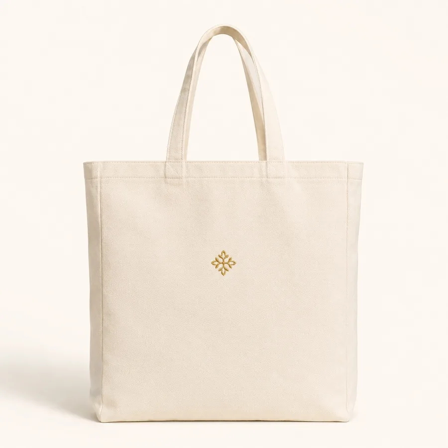
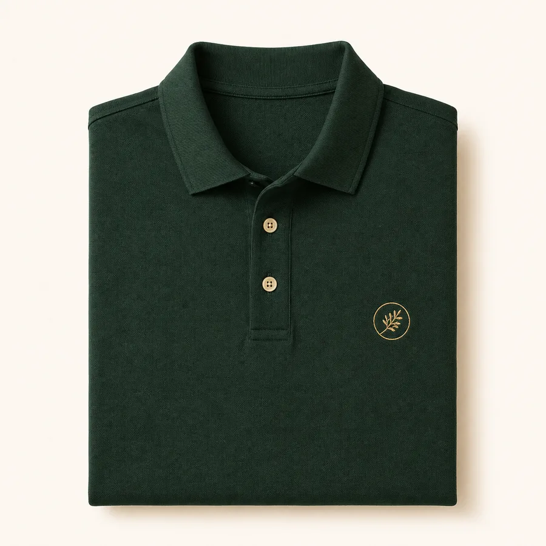
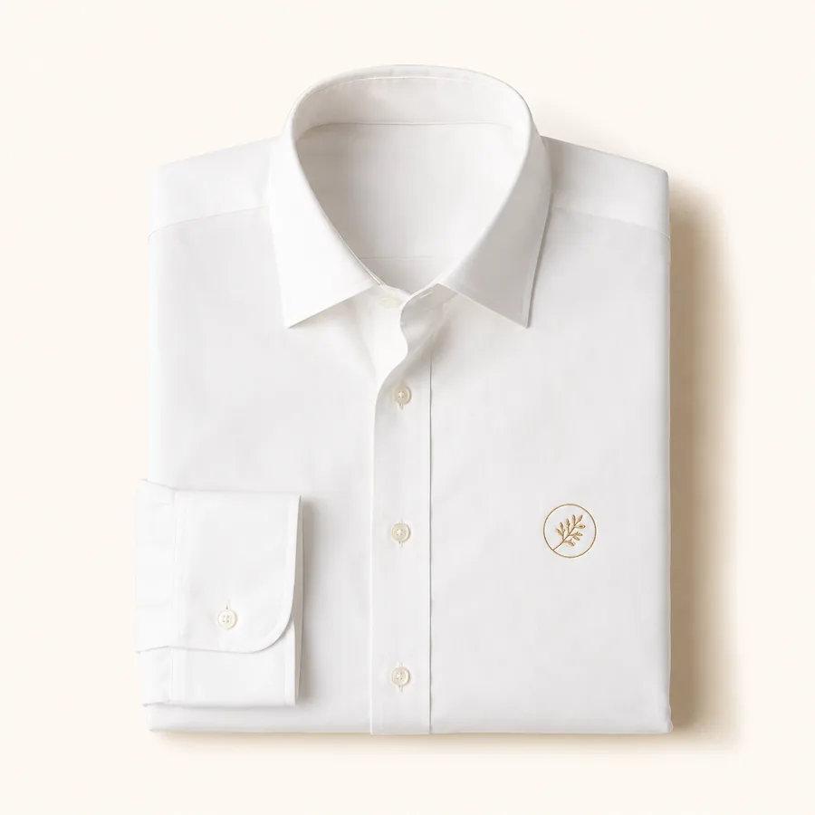
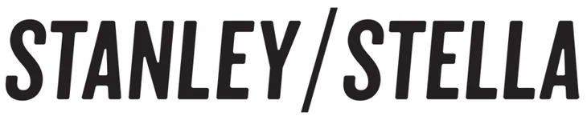
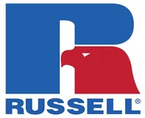
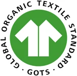
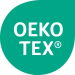
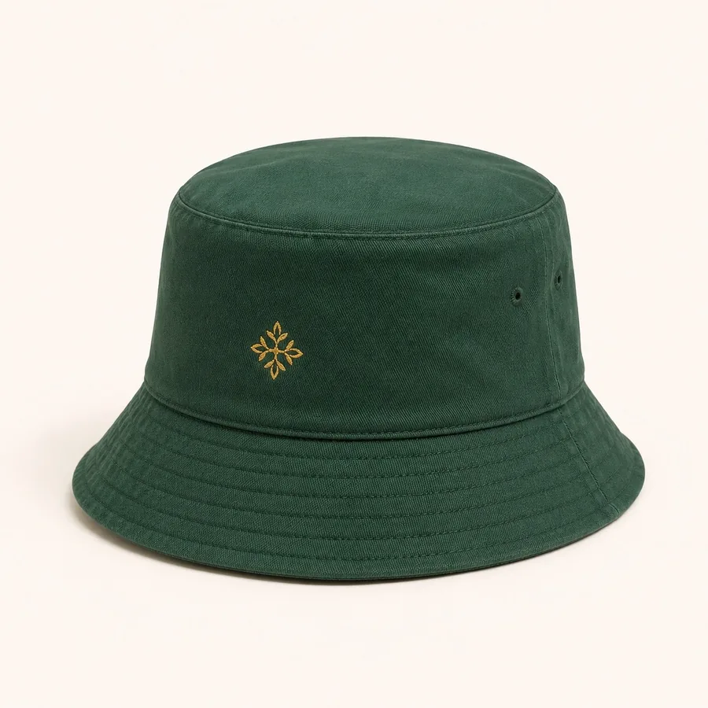
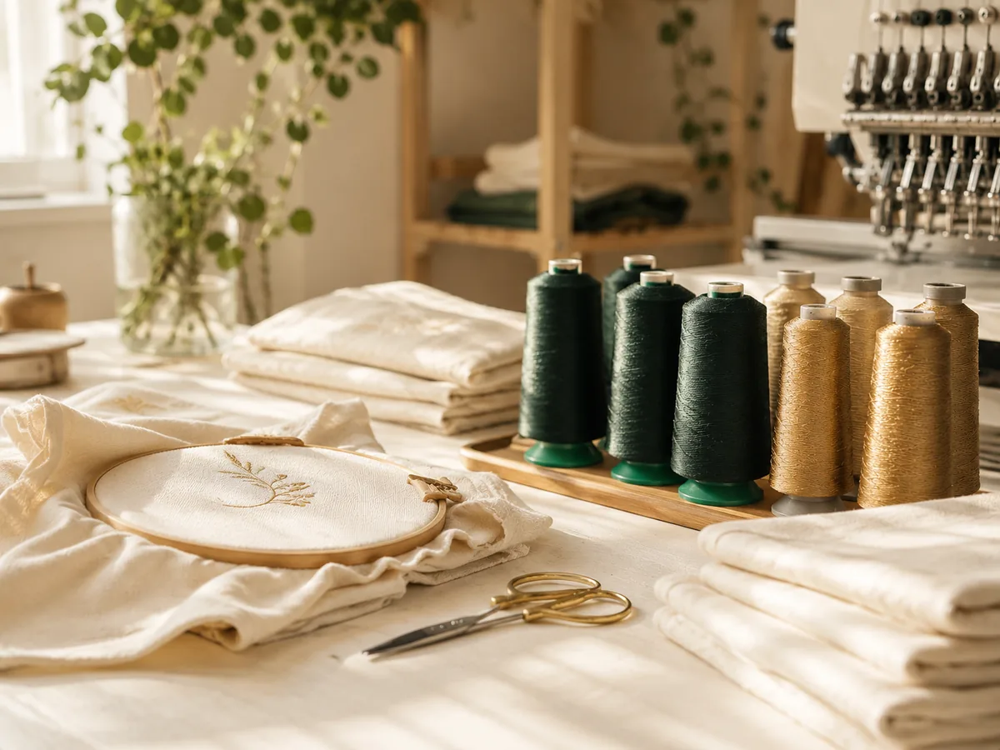

GOTS-Bio-Qualität
100 % GOTS-zertifizierte Bio-Baumwolle von Stanley/Stella – Qualität, die zu Ihrer Marke passt.
GOTS-zertifiziertBRODIRA ist Ihr Partner für personalisierte Bio-Baumwoll-Stickerei – für Babyfachhandel, Kliniken, Hotels und Unternehmen. Logo & Namen, gefertigt in Karlsruhe, geliefert in Mengen.
Antwort in der Regel innerhalb 1 Werktag · Muster vor der Serie







Logo, Name oder individuelles Motiv – präzise, langlebig und in gleichbleibender Qualität.
100 % GOTS-zertifizierte Bio-Baumwolle von Stanley/Stella – Qualität, die zu Ihrer Marke passt.
GOTS-zertifiziertAttraktive Konditionen ab der ersten Mengenbestellung – transparent, planbar und fair kalkuliert.
MengenrabattPersonalisierung mit Namen oder Ihrem Logo. Auf Wunsch neutrale Lieferung direkt an Ihre Kunden.
Auch White-LabelMehr dazu: Logo besticken lassen · Namen besticken lassen · Stickerei Karlsruhe
Gemacht für Unternehmen, die Wert auf Details legen – vom Einzelstück bis zur wiederkehrenden Serie.
Personalisierte Sortimente, die sich von der Stange abheben – als feste Linie oder saisonale Aktion.
Mehr erfahrenWillkommensgeschenke zur Geburt, bestickt mit Namen – in Ihrer Handschrift und Ihrem Anspruch.
Mehr erfahrenHochwertige, persönliche Geschenke und Corporate Wear für Mitarbeitende – ein Detail, das bleibt.
Mehr erfahrenBestickte Textilien mit Ihrem Namen oder Logo – in gleichbleibender Qualität, auch bei Nachbestellung.
Mehr erfahrenVon Corporate Wear bis Merchandise: Wir besticken hochwertige Blanks führender Marken wie Stanley/Stella und Russell – passend zu Ihrem Einsatz.
Langarm-Popeline für Uniform & Corporate Wear – bestickt mit Ihrem Logo.
Russell · Tailored PoplinBio-Baumwoll-Polo für Teams, Events & Gastronomie – Logo links auf der Brust.
Stanley/Stella · STPM224Nachhaltige Baumwolltasche für Promotion, Goodie-Bags & Merchandise.
Stanley/Stella · STAU773
Sommerlicher Hut für Events, Festivals & Sommer-Aktionen – bestickt mit Logo.
Stanley/Stella · STAU893Weitere Blanks und Marken auf Anfrage – sagen Sie uns einfach, welches Textil Sie veredeln möchten.

In vier Schritten von der Anfrage zur Lieferung – persönlich begleitet, termintreu umgesetzt.
Sie schildern uns Bedarf, Stückzahl und Wunschmotiv – telefonisch oder per E-Mail.
Sie erhalten ein Stickmuster und transparente Konditionen mit Staffelpreisen.
Wir besticken in Karlsruhe – präzise, GOTS-zertifiziert und termintreu.
Versandfertig in der gewünschten Verpackung – neutral oder mit Ihrem Branding.
BRODIRA ist eine Stickerei-Manufaktur aus Karlsruhe. Wir veredeln Textilien aus 100 % GOTS-zertifizierter Bio-Baumwolle mit Namen, Logos und individuellen Motiven – vom Einzelstück bis zur wiederkehrenden Serie.
Jede Bestellung behandeln wir, als wäre sie die einzige – ob ein einzelnes Geschenk oder eine Lieferung an Ihr Unternehmen.
Kein anonymer Großbetrieb: Sie haben feste Ansprechpartner und erhalten gleichbleibende Qualität – Bestellung für Bestellung. Das macht uns flexibel für Sonderwünsche und verlässlich bei Serien.
Wir fertigen vom Einzelstück bis zur wiederkehrenden Serie. Staffelpreise greifen ab der ersten Mengenbestellung – sprechen Sie uns einfach mit Ihrer Wunschmenge an.
Der Preis hängt von Stichzahl, Textil und Menge ab. Nach Ihrer Anfrage erhalten Sie ein transparentes Angebot mit Staffelpreisen – die Logo-Digitalisierung ist dabei inklusive.
Ja. Wir digitalisieren Ihr Logo als Stickdatei und liefern vor der Serie ein Muster zur Freigabe – so sitzt jedes Detail.
Gerne. Für wiederkehrende Aufträge vereinbaren wir feste Konditionen und planbare Termine – auch mit neutraler White-Label-Lieferung an Ihre Filialen oder Kunden.
Wir besticken 100 % GOTS-zertifizierte Bio-Baumwolle von Stanley/Stella sowie hochwertige Blanks weiterer Marken wie Russell – mit Premium-Stickgarn, schadstoffgeprüft.
Beschreiben Sie kurz Ihr Vorhaben – wir melden uns in der Regel innerhalb eines Werktags mit einem Angebot und auf Wunsch einem Muster.